Import, cull, develop, export and archive your RAW photos on a Mac
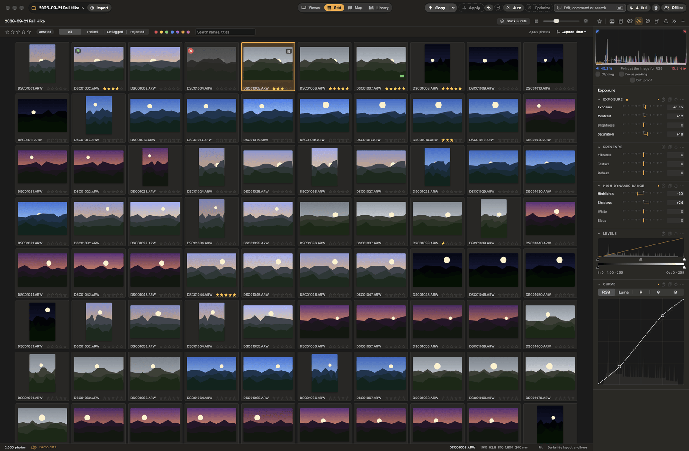
Darkslide is free software under the Apache License 2.0 · The Darkslide Authors
Chapter 1
Welcome to Darkslide
Darkslide is a RAW photo workflow app for macOS. It takes you from a memory card to finished, backed-up photos: import and verify, cull, develop, export and archive. It is built around three ideas.
Speed where you spend your time. Thumbnails appear straight away from the preview each RAW file carries, and full renders fill in behind them. Culling is driven by single keys, and the develop pipeline runs on the GPU, so sliders respond as you drag.
Sessions you own. A session is an ordinary folder: your originals, plus a small sidecar file per photo that holds its rating, labels, keywords and edits. The sidecars are the source of truth. Darkslide keeps a database alongside them only to be fast, and can rebuild it from the sidecars at any time. Library mode still shows every session's photos together.
Never losing a file. Imports are checked byte for byte before they count as done. Darkslide never deletes anything from a memory card or from your archive, and every file it writes is written in full before it replaces the old one.
From the card to the keepers.
The main window
The main window has a toolbar at the top, the browser in the middle and the tools beside it.
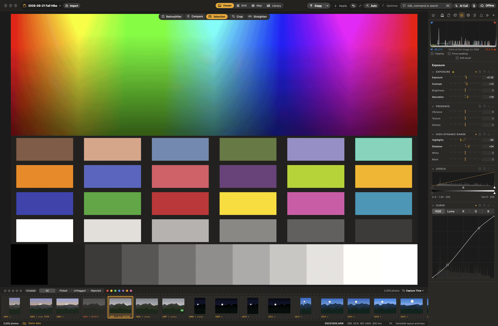
The main window in demo mode: the viewer, the filmstrip below it and the Exposure tools.
Toolbar: the session menu, Import, the view switch (Viewer, Grid, Map, Library), the Edit with words field (⌘K), archive status and the Copy / Apply buttons.
Browser: the viewer with a filmstrip, or a grid of thumbnails. The filmstrip can sit at the bottom or as a column on the left or right (View ▸ Filmstrip).
Tools: tabs of tool panels (Library, Import & Archive, Color, Exposure, Lens, Composition, Details, Layers, Metadata, Output, and your Favorites). View ▸ Tools on Left moves them to the other side.
Press ? at any time for a cheat sheet of the keys, and F or Tab to hide the panels and see only the photo.
Chapter 2
Install and first run
Requirements
A Mac with Apple silicon, running macOS 26 or later.
To build it: the Xcode Command Line Tools (Swift 6.2) and Rust 1.90 or newer. Xcode itself isn't needed.
Build from source
Darkslide is built from its source code. In Terminal:
git clone https://github.com/sbaillar/darkslide.git
cd darkslide
DS_SKIP_MODELS=1 scripts/build-app.sh --run
This builds dist/Darkslide.app and opens it. You can then copy it to your Applications folder.
DS_SKIP_MODELS=1 builds faster by leaving out the AI Denoise model (building it needs Python 3.13 and a download). Without it, AI Denoise shows as unavailable. Leave the variable out for a full build.
scripts/make-signing-identity.sh creates a local signing identity once, so macOS remembers the permissions you give Darkslide across rebuilds.
Try it without your photos
Demo mode opens sample sessions of synthetic photos and simulates imports and archiving. It never reads or changes your own files:
Every screenshot in this guide was taken in demo mode.
First run
The first time Darkslide opens, a short setup sheet walks you through five steps. Skip for Now keeps the defaults, and everything can be changed later in Settings (⌘,).
Welcome: what Darkslide does.
What did you use before? Choose Darkslide, Lightroom Classic or Capture One. This only moves panels, keyboard shortcuts and a few names to where your hands expect them (Settings ▸ Familiar).
Where should sessions live? The folder where new sessions are created. Pick your fastest disk.
Archive: optionally, a folder (for example on a NAS) that sessions are copied to in the background.
Amazon Photos (optional): a folder the Amazon Photos app backs up, if you use it.
Permissions
macOS asks before Darkslide can read removable volumes, network volumes or folders such as Pictures. Allow these for the drives you keep photos on. Voice commands ask for microphone and speech recognition access the first time you turn them on.
Chapter 3
Sessions
Everything in Darkslide happens in a session: a folder of photos and their sidecars. Each import usually becomes a new session, but you can import into an existing one, or open any folder of photos as it is.
Your edits are written to the photo's sidecar. The indexes that make browsing and Library fast are built from the sidecars and can be rebuilt.
New, open and close
New Session (File ▸ New Session…, ⇧⌘N): give it a name and a location. It is created with Capture, Selects, Output and Trash folders, ready for an import or for photos dragged in.
Open (⌘O): choose a recent session, or Choose Folder… to open any folder. File ▸ Open Recent lists recent sessions; one on a drive that isn't connected is shown greyed out with the reason.
Close Session (⌥⌘W): closes it. Nothing is deleted, and it stays in the Sessions list.
Folders opened in place
When you open a folder that isn't a Darkslide session, Darkslide works on it in place: it never moves, renames or changes your files, and writes only its own sidecars and index. Renamed or edited files are recognised again when you reopen the folder. Commands that would move files, such as moving rejects to the session Trash, are turned off for such folders and say why.
What is in a session folder
My Session/
Capture/ originals
Selects/ picks moved out of Capture
Output/ exports, unless a recipe says otherwise
Trash/ the session trash (restorable)
.ds/ sidecars (the source of truth) and the rebuildable index
Because a session is self-contained, you can move it to another drive, copy it to another Mac, or archive it, and it opens the same way.
Disconnected drives and missing files
Sessions on a drive that isn't connected stay listed, marked as disconnected. Nothing is hidden or removed.
If an original has been moved or renamed, Darkslide finds it again by its content. Locate… and Locate Folder… point it to files you moved yourself.
Remove Missing is only offered when Darkslide can prove the file is really gone from the right disk.
Chapter 4
Importing from a memory card
Insert a card and choose File ▸ Import from Card… (⇧⌘I) or the Import button. The import sheet lists the photos on the card. You can also import from any folder (Choose Folder…), or Browse Card to look at a card read-only without copying anything.
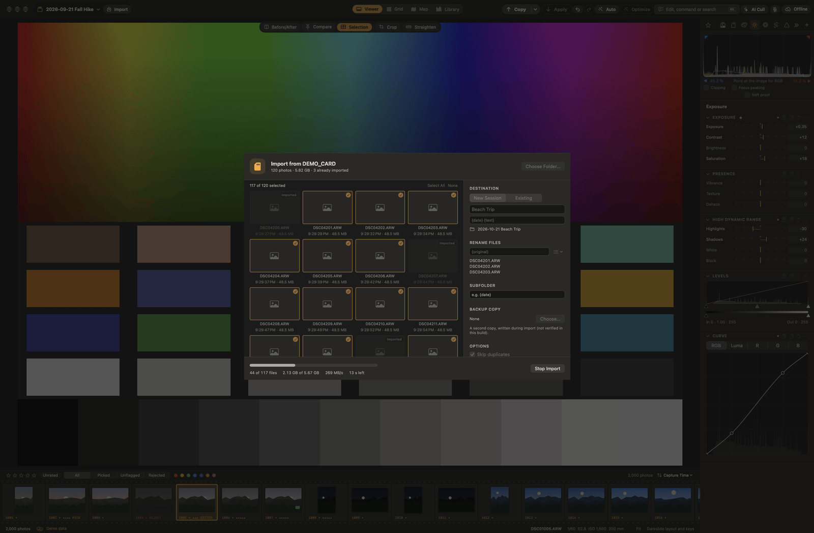
An import in progress (demo mode simulates the card).
Options
Session: a new session (named for you, or by you) or an existing one.
Subfolder inside the session's Capture folder, with tokens such as {date}, {time}, {camera} and {text}.
Rename Files with a template: {original}, {date}, {time}, {seq}, {seq4}, {camera}, {text}.
Skip duplicates: files already in any session are not copied again.
Backup Copy: a second destination that receives the same verified files.
Re-read the card after copying: reads every file from the card a second time and compares it. This catches a card reader that returned bad data once, and takes twice as long.
What makes it safe
Files are copied in parallel, and each copy's BLAKE3 checksum is verified before the import counts it as done.
Nothing is ever deleted from the card. When the import finishes you can eject the card safely from the sheet.
If an import is interrupted (the card is pulled, the Mac sleeps), Darkslide offers to resume it the next time, and unfinished copies are never mistaken for complete ones.
Metadata presets (for example your name and copyright) can be applied to every import, and the camera's own artist and copyright fields are read.
Chapter 5
Culling
Culling is choosing the keepers. Darkslide is built so you can do it with one hand on the keyboard: move with the arrows, and rate, label or flag with single keys. Each key can be changed in Settings ▸ Shortcuts.
Views and moving around
G shows the grid, E (or ↩) the viewer. ⌃⌘F goes full screen.
←→ move to the previous or next photo; ↑↓ move a row in the grid or in a filmstrip with several rows. Hold ⇧ to extend the selection.
Space zooms to 100% at the cursor and back. ⌥⌘0 fits, ⌥⌘1 shows actual size, ⌘+ / ⌘- zoom.
B hides the filmstrip. Drag the line beside it to show more rows or columns of thumbnails, or right-click a thumbnail to move the filmstrip to the left or right.
View menu aids: Clipping Warning (⌥⌘J), Focus Peaking (⌥⌘P), Loupe (⌥⌘L) and Navigator (⌥⌘N).
The grid. Ratings, colour labels and pick or reject flags show on each thumbnail.
Ratings, labels and flags
Key
Does
1 – 5, 0
Rate 1 to 5 stars; clear the rating
6789-
Red, yellow, green, blue or purple label (orange and pink exist but have no key until you assign one)
P / X / U
Pick, reject, unflag
Photo ▸ Auto-Advance After Rating moves to the next photo after each rating. Ratings and labels apply to every selected photo.
Comparing
Multi-view: select several photos (⌘-click or ⇧-click in the filmstrip) and the viewer shows them all, as large as they fit: two side by side, four as 2×2, up to twelve. The focused photo is outlined, and it is the one you zoom and edit. Turn this off with View ▸ Show Selection in Viewer.
Survey (N or ⌥⌘S): the selected photos side by side. Press X to take the weakest out until only the keepers are left.
Before / after (Y) splits the viewer between the original and your edit. Pin for compare (K) keeps a photo on screen while you move through the others.
Stacks: bursts are stacked; S expands or collapses a stack.
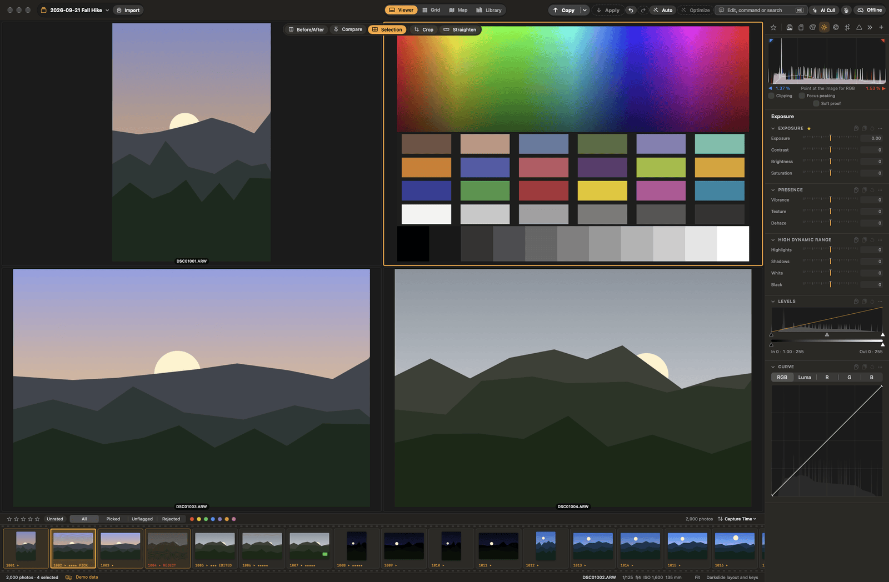
Multi-view: four selected photos, the focused one outlined.
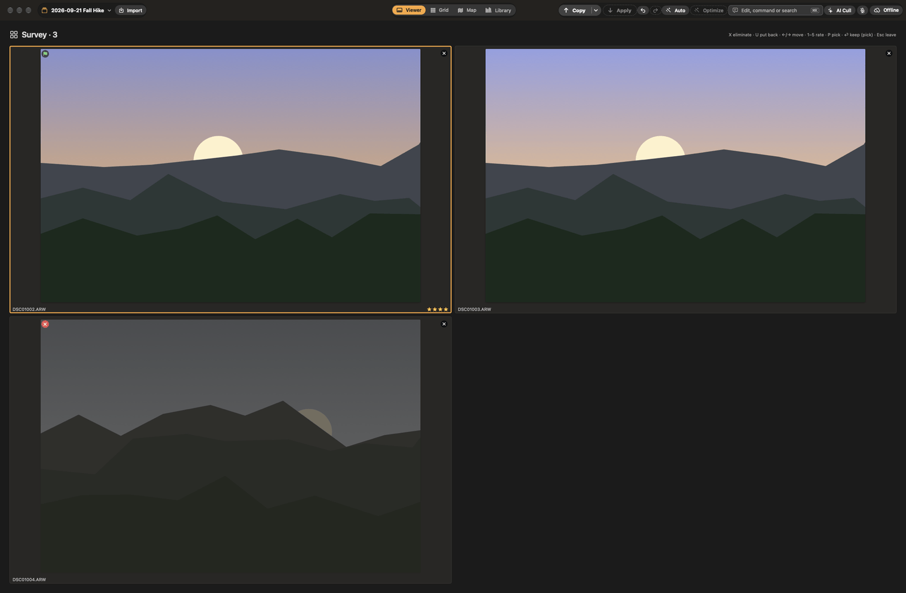
Survey: one photo already taken out with X.
AI Cull
Adjustments ▸ AI Cull (⇧⌘K) scores every photo for sharpness, exposure and closed eyes, and groups near-duplicates, all on this Mac. Use the scores to filter, then make the final call yourself.
Voice culling
Turn on View ▸ Voice Commands (⌃⌘V) and say what to do: "pick", "reject", "three stars", "next", "next 3", "go to photo 12", "reject the next 3", "rate the next 5 three stars", "show picks" or "undo 3 times". Say "what can I say?" for every phrase. Speech is recognised on this Mac. Settings ▸ Voice adds your own phrases (for example "keeper" for Pick).
Finishing a cull
Photo ▸ Move Rejected to Trash moves rejects into the session's Trash folder. Restore from Session Trash brings them back.
Photo ▸ Move Picked and Rated to Selects… moves the keepers into Selects.
Photo ▸ Delete Rejected… asks before it deletes anything, and never touches a card or the archive.
Smart folders, filters and metadata
Smart Folders (Library tab) collect photos by exact rules on rating, label, flag and keyword. ⌘0 shows all photos and ⌘1 – ⌘5 show only that many stars.
Filters narrow the browser to picks, rejects, unflagged photos and more.
Metadata (Metadata tab): title, caption, headline, creator, credit, copyright, location, instructions and usage terms (IPTC Core), and Keywords, for one photo or the whole selection. Fields that differ across the selection show as "Mixed" and are kept unless you change them.
Chapter 6
Library, Find, People and Map
Library mode
Choose Library in the toolbar's view switch to see the photos of every session in one fast grid, without opening each session.
Browse All Photographs, by session, by date (year, month, day) or by collection.
Filter by rating, label, flag, camera and keyword; search file names, titles and keywords; sort by capture time, rating, file name or session.
Rate, label and flag from the Library. The change is written to the photo's own session.
Collections gather photos from any sessions. Smart collections keep a filter (Smart Collection from Filter…).
Double-click a photo, or choose Open in Session, to open it in its session for editing.
Sessions on a disconnected drive stay listed; their photos say the original isn't reachable.
Find
Edit ▸ Find… (⌘F) searches across every session in plain words, such as "pics of alex at the beach last summer". It understands the people you have named, places, dates, ratings and descriptions of what is in the photo, and returns both sessions and folders and individual photos, each with the reason it matched. Photo search runs on this Mac with a downloaded on-device model.
People
The People panel (Library tab) groups faces found in the background on this Mac. Answer "Who is this?" to name a group, merge groups that are the same person, or split off faces that are someone else. Named people can then be found with Find and used for people masks when editing. Nothing about faces leaves your Mac.
Map
Choose Map in the view switch to see where photos were taken, from the camera's GPS or an XMP sidecar, as clustered markers for this session or all sessions.
Click a marker, Draw Area, or use Filter to View to show only the photos in that part of the map.
Drag photos from the filmstrip onto the map to set their location. It is kept in the sidecar, never written to the RAW file, and Remove Location takes it off again.
Map tiles come from Apple Maps, so the areas you look at are requested from Apple. Darkslide asks once before showing the map, and Settings ▸ General turns it off. Your photos and their locations are never uploaded.
Chapter 7
Developing
Edits are never applied to the original file. They are stored as settings in the sidecar and rendered by the develop pipeline on the GPU, so you can change or undo them at any time (⌘Z / ⇧⌘Z).
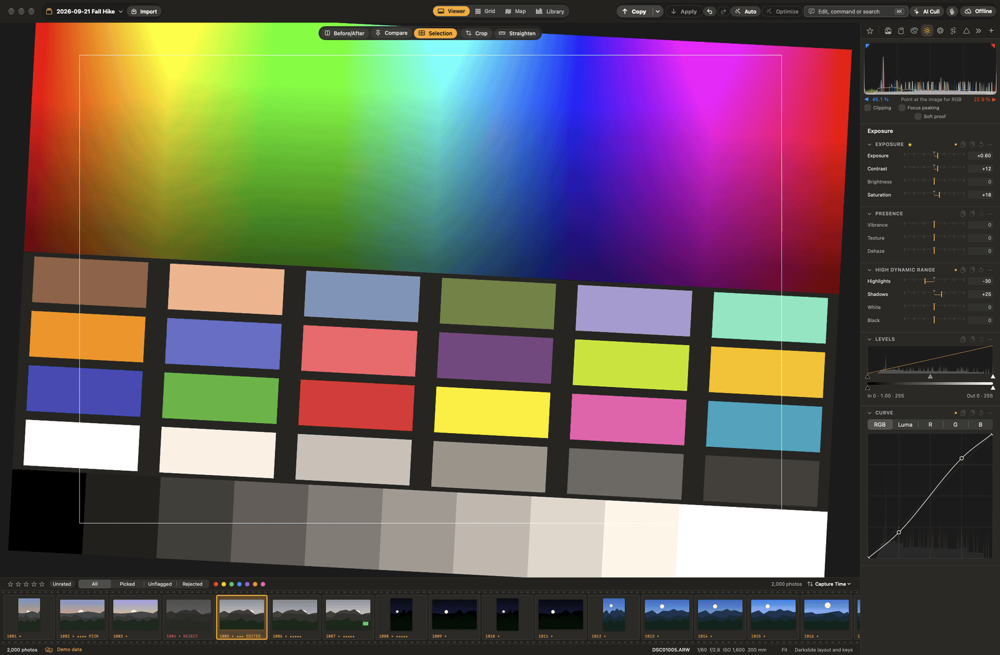
A live edit: warmer white balance, more exposure, a crop and a straighten, with the histogram.
Tool tabs
Tools live in tabs across the top of the tools pane, like Capture One. Tabs that don't fit go in a » menu.
The + button adds or removes any tool in one click. Each panel's ⋯ menu removes or moves it, and panels can be dragged into any order.
Tools ▸ Customize Tools… (⇧⌘T) arranges tabs, creates your own (for example a "Portraits" tab with just the tools you use for portraits) and saves workspaces.
The Tools menu lists every tool by tab; choosing one shows it.
Adjustments ▸ Edit All Selected applies each change to every selected photo.
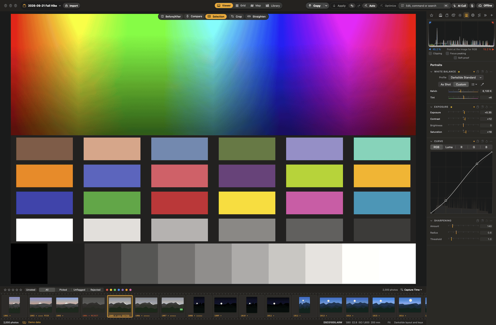
A custom "Portraits" tab next to the built-in tabs.
Light
Exposure: exposure, contrast, brightness and saturation.
High Dynamic Range: highlights, shadows, whites and blacks.
Levels and Curve (RGB and per channel).
Presence: texture, vibrance and dehaze.
White balance and colour
White Balance: as shot, presets, temperature and tint, or the picker (W): click something that should be neutral. A magnifying loupe shows exactly what you are about to sample.
Color Balance wheels (master, shadows, midtones, highlights) and the Color Editor for individual colour ranges. Saturation is in Exposure and vibrance in Presence.
Camera profiles (looks): Darkslide Standard, Neutral and Vivid, or an imported Adobe DCP profile.
I is a colour readout picker; click to pin a readout.
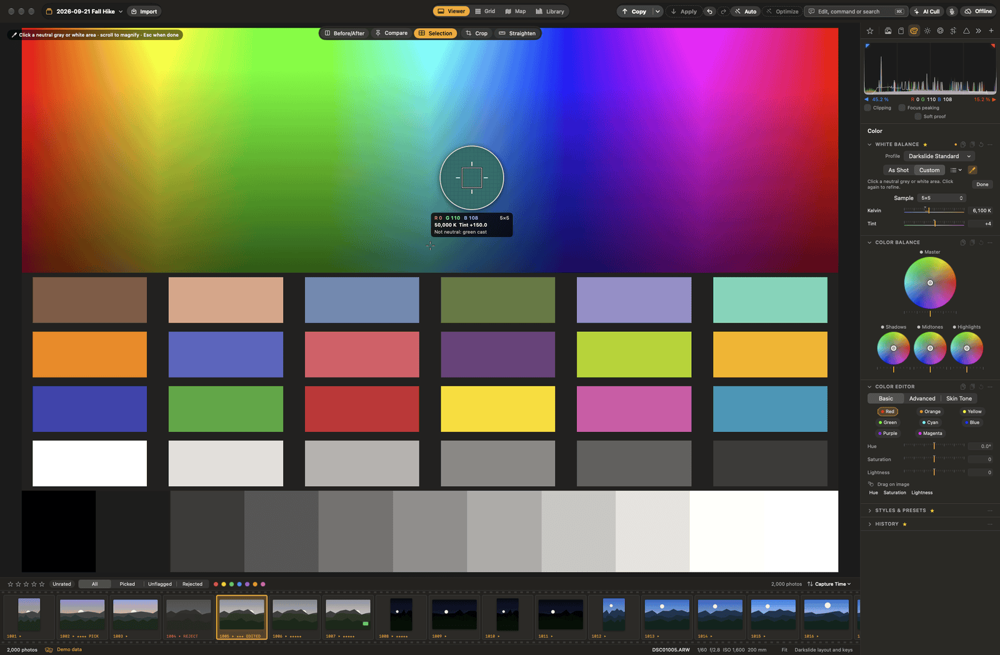
The white balance picker's loupe and readout.
Looks, styles and presets
The Styles & Presets panel holds one-touch looks: Portrait, Cinematic, film negatives and slides, faded matte, cross-processed, vintage, three black-and-whites, moody, bright and airy, golden hour, dreamy glow, pop, HDR detail, tilt-shift miniature and halation film. Each previews on the photo as you hover, applies in one click as one undo step, and keeps an Intensity slider; every setting it made stays editable. Save your own settings as presets, or add looks with plug-ins.
Edit ▸ Match Total Exposures (⌥⇧⌘M) and Match White Balance to Focused Photo even out a set of photos.
Detail and lens
Sharpening, Noise Reduction (ISO-adaptive, plus AI Denoise; see chapter 8) and Clarity (clarity and structure).
Lens Correction: lens profiles, distortion, chromatic aberration, and vertical and horizontal keystone. Vignetting corrects or adds a vignette.
Effects: an AI lens blur (background blur from an on-device depth model; click to set the focus, choose a bokeh shape, or use a tilt-shift band), glow, film grain and halation.
Layers and masks
The Layers tab adds local adjustments. Each layer has its own mask and most of the global tools.
Brush and erase strokes, linear and radial gradients, luminance and colour range masks. Shapes combine by adding, subtracting or intersecting, with feather and invert. [ and ] change the brush size. You can bind keys to the mask tools in Settings ▸ Shortcuts.
AI masks for the sky, the subject, and people: a person, or parts of them (face, skin, eyes, teeth, hair, clothes). The sky and people-part models are downloaded the first time you use them.
Heal, clone and remove
In the Heal & Clone panel (Details tab), heal and clone spots such as sensor dust. The Remove tool fills whatever you paint over from its surroundings: paint over a distraction, release, and it's gone. A downloaded on-device model (LaMa) does the fill when it is installed; a built-in fill is used until then.
Crop and straighten
C opens the crop tool, with Free, Original, 1:1, 4:5, 3:2 and 16:9 presets. Drag the handles; ↩ applies, Esc cancels, X swaps the orientation.
R is the straighten tool: drag along something that should be level.
⌘[ / ⌘] rotate left or right.
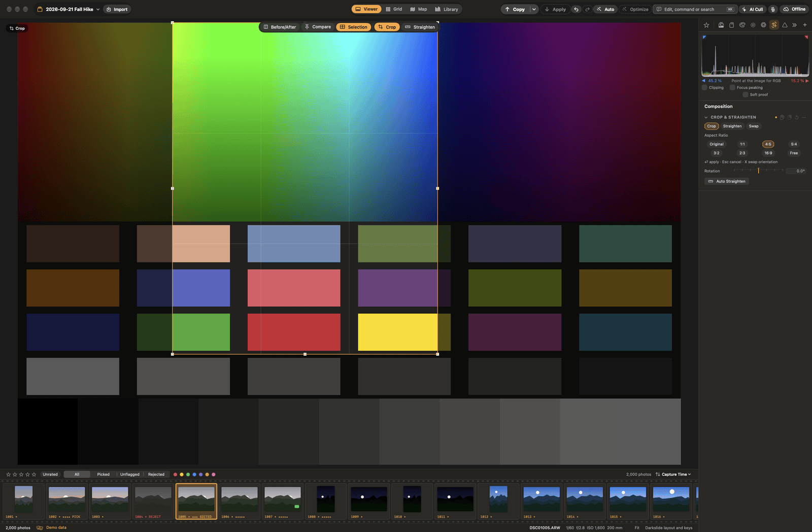
The crop tool at 4:5, mid-drag.
Variants, history and soft proofing
New Variant (⌘D) makes another version of a photo without duplicating the file.
History (View ▸ Show History) lists the photo's edit steps, newest on top. Click a step to go back to it, hover to preview it.
Soft Proof (⇧S) shows the photo through any installed ICC profile, such as a printer and paper, and can mark out-of-gamut colours.
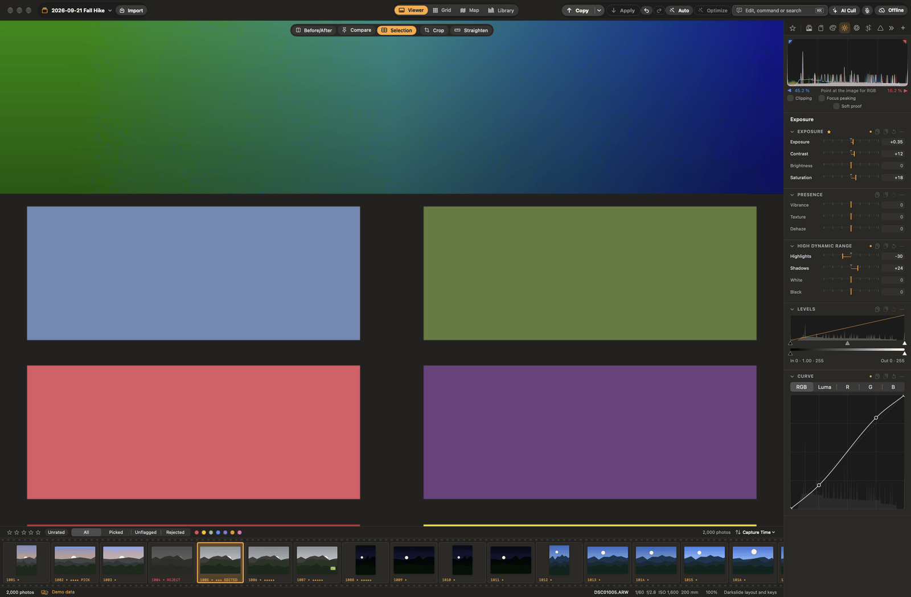
Full-resolution detail at 100% (Space or ⌥⌘1).
Chapter 8
AI tools
Darkslide's AI tools run on your Mac. Some of their models are downloaded once, the first time you use the tool; your photos are never uploaded. Every change an AI tool makes is shown and can be undone on its own.
Edit with words
Press ⌘K and type what you want, for example "warmer and a bit brighter" or "less contrast, more shadows". Darkslide changes only what you name and tells you what it did. Optionally, Settings ▸ AI can send the text (never the photo) to the Jev service with your own API key for phrasing the built-in parser doesn't understand.
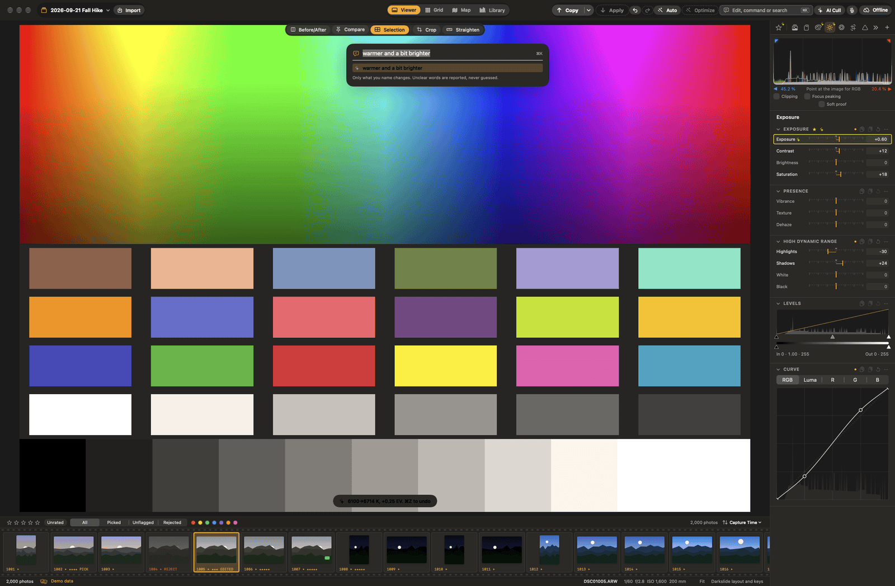
"warmer and a bit brighter", applied.
Auto Adjust and AI Optimize
Auto Adjust (⇧A or ⇧⌘A) sets white balance and tone as a quick starting point.
AI Optimize (⌥⌘A) looks at the photo (the scene, faces, sky, noise) and proposes measured adjustments, each with the reason. Choose which ones to apply.
AI Looks suggests three or four looks that suit the photo (a person, low light, a landscape, a sunset), each with the reason.
AI Changes
Every setting that AI Optimize, Edit with words or Auto Adjust changed gets a yellow outline in the tools. Its tooltip says what it was changed to, from what, and why. Adjustments ▸ AI Changes… (⌥⇧⌘A) lists them all with who changed them and when. Undo one, or Undo All AI Changes; your own edits made since are kept. The list is saved in the sidecar.
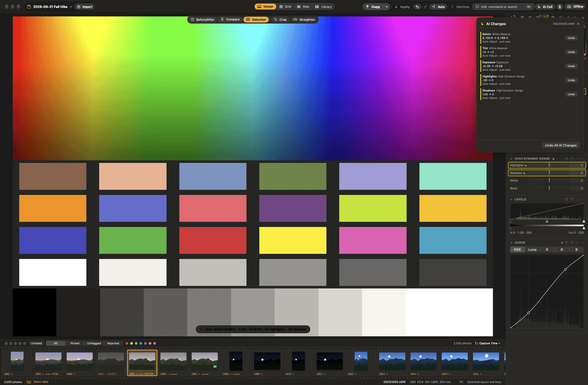
After Auto Adjust: the changed tools are outlined and the AI Changes list shows each change.
AI Denoise and AI Upscale
AI Denoise (Noise Reduction panel) removes noise with a neural network on the Neural Engine and GPU. Turn it on for the selected photos and they are denoised in the background; exports denoise just before they render.
AI Upscale (Photo ▸ Enhance ▸ Upscale 2×) makes a new photo twice the size on each side, kept as a linear DNG next to the original with its edit. Export recipes can enlarge with it too. Its model is downloaded the first time, after you agree to its terms.
AI Cull and voice commands are described in chapter 5, and AI masks and lens blur in chapter 7.
Chapter 9
Copy and apply
Edit one photo, then give the same look to the rest. The Copy and Apply buttons sit at the top right, as in Capture One.
Copy (⇧⌘C) takes the photo's edited adjustments in one click. Its ▾ menu switches to Custom, where you tick the groups to copy. Crop, heal and layers are off unless you tick them.
Apply (⇧⌘V) pastes onto every selected photo except the one copied from, as one undo step. The clipboard stays until the next Copy.
Copy from Previous (⌥⌘V) applies the previous photo's adjustments to this one.
A pasted crop respects each photo's aspect ratio and orientation, and keeps its own rotation and, by default, its straighten.
Exposure can be pasted as an absolute value or as a relative change.
Chapter 10
HDR and panorama
Select two or more photos and choose:
Photo ▸ Merge to HDR… (⇧⌘H): bracketed exposures are aligned, deghosted (anything that moved comes from one frame) and merged in linear light.
Photo ▸ Merge to Panorama… (⇧⌘M): overlapping frames are stitched with a perspective, cylindrical or spherical projection (chosen automatically from the angle covered) and cropped to the largest clean rectangle.
The result is a new linear DNG next to the sources, with the full editing latitude of a RAW. The originals are not changed.
Chapter 11
Exporting
Select photos and choose File ▸ Export… (⌘E). The export sheet lists your recipes; tick one or several and every selected photo is exported through each, in the background.
Recipes
Format: JPEG, HEIC, 16-bit TIFF, or 8- or 16-bit PNG, with quality.
Size (with or without upscaling, or AI Upscale), output sharpening and colour space (sRGB, Display P3, or the soft-proof ICC profile with its rendering intent).
Destination and file name template.
Metadata: include EXIF, your IPTC fields and keywords, or leave out the GPS position and place names.
Watermark: a line of text (font, size, colour, opacity, shadow; {copyright}, {year}, {filename} tokens) or a PNG logo, at one of nine positions. It keeps the same relative size at every export size, and the editor previews it on the focused photo.
Post-processing: export steps from plug-ins, for example a border.
Google Photos
A JPEG or HEIC recipe can also upload its files to Google Photos: tick Also upload to Google Photos and name an album. Darkslide adds to its own album with that name or creates it, uses each photo's caption as its description, and shows progress per photo and a list of any that failed. Sign in once in Settings ▸ Google Photos; the sign-in is kept in your Keychain. A build without a built-in Google client can use your own (see docs/GOOGLE_PHOTOS.md).
Chapter 12
Archive and Amazon Photos
Archive
Darkslide can copy your sessions to an archive folder, for example on a NAS, in the background with rsync. Set it up in Settings ▸ Archive or the Import & Archive tab.
rsync runs when there are changes, after an import and when you close a session, and checks on the interval you choose.
It never deletes anything in the archive. Choose whether rejected photos are archived too.
The archive button in the toolbar shows the status: up to date, behind, offline or a problem, with the recent runs.
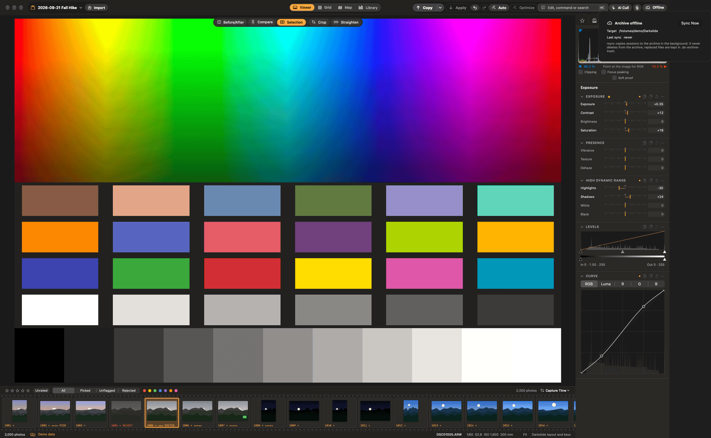
The archive popover after a run.
Amazon Photos hand-off
Amazon Photos has no public API, so Darkslide mirrors your originals into a folder that the official Amazon Photos app backs up. Choose that folder in Settings ▸ Archive or during setup, and choose whether rejected photos are sent too.
Chapter 13
Plug-ins
Plug-ins add looks, styles, voice phrases, and export steps. Manage them in Settings ▸ Plugins.
Install: drop a .dsplugin folder on the pane, or Install…. The sheet shows what the plug-in says it does before anything is installed. Turn each plug-in on or off with Enabled.
Nothing is granted at install. Looks, styles and voice phrases are data only. An export step is WebAssembly code that runs sandboxed with time and memory limits; code from an unsigned or untrusted author waits for your approval and never gets file, network or account access silently. If a plug-in's files change, it waits for your approval again.
Darkslide's own looks and styles are a bundled plug-in. Developers can Add Development Folder… to work on a plug-in in place; see docs/PLUGINS.md.
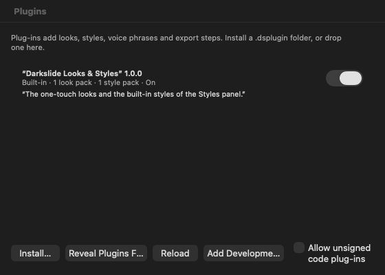
Settings ▸ Plugins.
Chapter 14
The Mac ↔ iPad link
Settings ▸ Devices lets a paired device work with the session open on your Mac. It is off until you turn on Allow iPad connections, and it only runs while Darkslide is open.
Pair a Device… shows a QR code and a 6-digit code. The code works once, for five minutes.
A paired device on the same network or your tailnet can browse the open session and download previews, originals and sidecars. Turn on Can send photos and edits to let it send new photos and edits back; edits merge without losing either side's work.
Transfers are mutually authenticated (TLS 1.3 with pinned keys), resumable and checksum-verified. Revoke removes a device at any time.
Note. The iPad app is planned. Today the ds-remote command-line client uses the link; see docs/REMOTE.md.
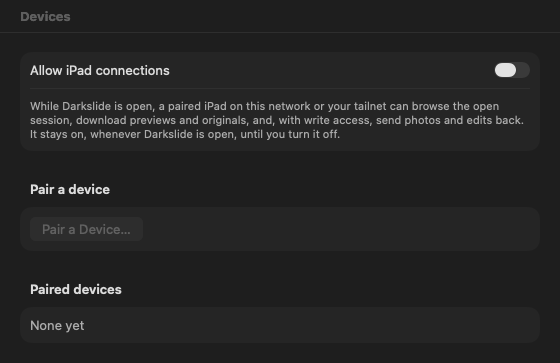
Settings ▸ Devices, with the link off.
Chapter 15
Coming from Capture One or Lightroom
Darkslide reads other apps' files and never modifies them. Each import starts with a dry run that shows what will change, what is approximate and what is left out, with a checkbox per category, and each can be reverted.
File ▸ Import Capture One Edits…: the ratings, colour tags, keywords, picks and supported adjustments of a Capture One session.
File ▸ Import Capture One Settings…: export recipes, the tool workspace, crop ratios, styles and presets, keyword libraries, import naming and the soft-proof profile.
File ▸ Import Lightroom…: a Lightroom Classic catalog (.lrcat, read from a copy), a folder of XMP sidecars, or Lightroom and Camera Raw presets. Ratings, labels, flags, keywords, titles, captions, collections, virtual copies (as variants), crop, and the develop settings Darkslide has an equivalent for.
Re-importing updates only what is still as imported, never your own changes. Revert Capture One Import… and Revert Lightroom Import… take an import back.
Settings ▸ Familiar also moves panels, keyboard shortcuts and names to match the app you know.
Chapter 16
Settings
Open Settings with ⌘,.
Pane
What it sets
General
Appearance, the sessions folder, opening the import sheet when a card is inserted, your name and copyright for exports, the new-session name, map tiles, and Show Welcome Again
Familiar
Layout, keyboard shortcuts and names like Darkslide, Lightroom Classic or Capture One
Shortcuts
Rebind every single-key command; a key already in use moves to the new command
Archive
The rsync archive target and interval, and the Amazon Photos folder
Google Photos
Sign in and out; your own Google client if the build has none
AI
How typed edits are interpreted, including the optional Jev service
Voice
Voice commands and your own phrases
Devices
The Mac ↔ iPad link and paired devices
Plugins
Installed plug-ins, their permissions, and development folders
Chapter 17
Troubleshooting
"Darkslide can't develop this file yet"
Fujifilm X-Trans RAFs and Nikon High Efficiency (HE/HE*) NEFs import and cull from their embedded previews, but don't develop yet. A few rare formats (Canon CRW, Sigma X3F, Phase One IIQ, ARRI) are refused. docs/CAMERAS.md lists what is tested.
A session or photos show as disconnected or missing
Connect the drive they are on. If you moved the files, use Locate… or Locate Folder…; files moved by Darkslide itself or renamed are found by content. Nothing is removed while a drive is away.
AI Denoise is unavailable
The app was built with DS_SKIP_MODELS=1, or without Python 3.13 or a network connection at build time. Rebuild without that variable.
An AI tool says its model isn't installed
Some models (removal, sky and people masks, depth, photo search) are downloaded the first time you use the tool. Check the network connection and try again; a damaged download is offered again. AI Upscale needs a build that sets a download location.
The map is blank
Map tiles may be turned off: choose Show Map, or turn them on in Settings ▸ General. Photos without a location don't appear until you drag them onto the map.
The archive says it is offline or behind
The archive drive or NAS isn't mounted, or didn't answer. Syncs wait until it is back, and nothing in the archive is ever deleted.
macOS keeps asking for permissions after each build
Run scripts/make-signing-identity.sh once and rebuild, so every build is signed with the same identity.
The keys don't do what this guide says
Settings ▸ Familiar may be set to Lightroom Classic or Capture One keys, or a key may have been rebound in Settings ▸ Shortcuts. Press ? to see the keys in use.
These are Darkslide's default keys. Single keys can be changed in Settings ▸ Shortcuts, and Settings ▸ Familiar switches to Lightroom Classic or Capture One keys. Press ? in the app to see the keys in use.